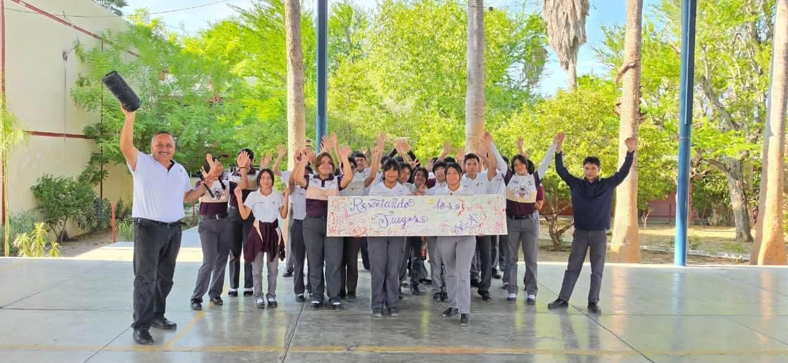

Juntos en Bienestar
Proyecto desarrollado por estudiantes del ITACE Reynosa, enfocado en abordar la ansiedad, la depresión y el estrés en la comunidad.
Fue presentado en un encuentro nacional relacionado con CECyTE e ITACE Tamaulipas, promoviendo la importancia del bienestar emocional y la salud mental.
✦ Bienestar emocional Conocer el proyecto ↗